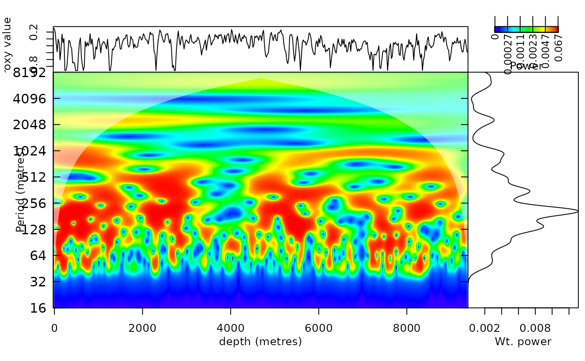
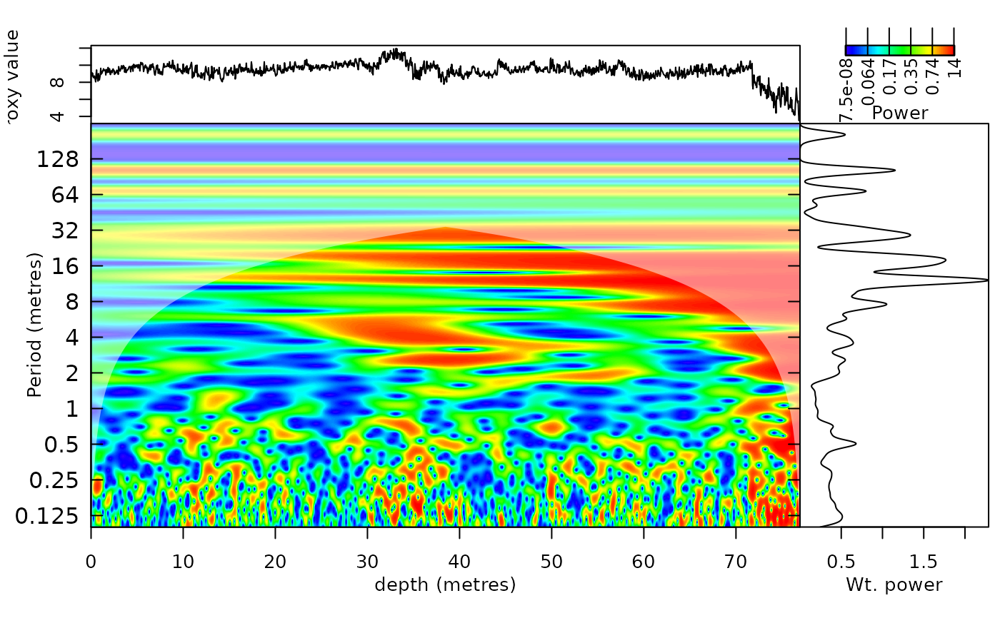
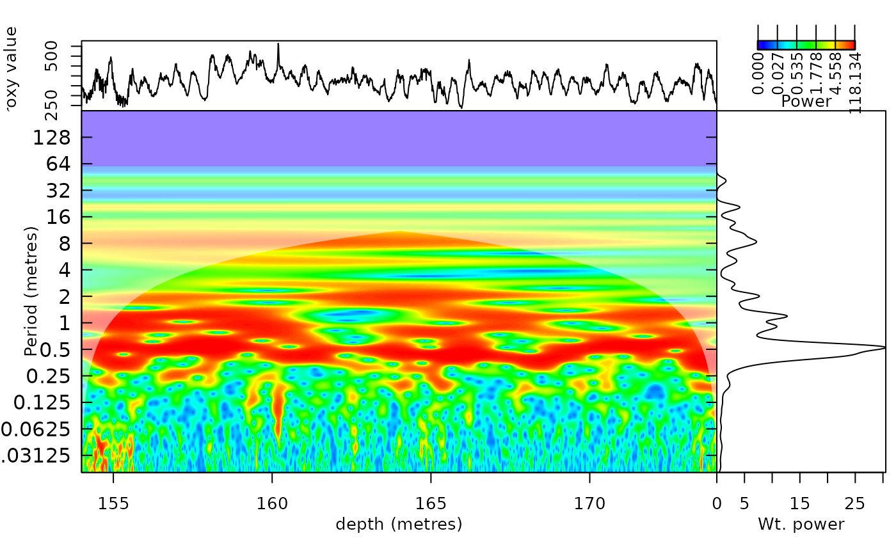

Plot wavelet scalogram using the outcome of the analyse_wavelet function.
Usage
plot_wavelet(
wavelet = NULL,
lowerPeriod = NULL,
upperPeriod = NULL,
n.levels = 100,
palette_name = "viridis",
color_brewer = "viridis",
useRaster = TRUE,
periodlab = "Period (metres)",
x_lab = "depth (metres)",
keep_editable = FALSE,
dev_new = wr_dev_new_default(),
plot_dir = TRUE,
add_lines = NULL,
add_points = NULL,
add_abline_h = NULL,
add_abline_v = NULL,
add_MTM_peaks = FALSE,
add_data = TRUE,
add_avg = FALSE,
add_pval = FALSE,
pval_abline = c(0.1, 0.05),
pval_cutoff = c(0.1),
add_MTM = FALSE,
mtm_siglvl = 0.95,
demean_mtm = TRUE,
detrend_mtm = TRUE,
padfac_mtm = 5,
tbw_mtm = 3,
plot_horizontal = TRUE,
add_signif = NULL,
colour_brewer = NULL,
whiten = FALSE,
scale = NULL
)Arguments
- wavelet
Wavelet object to plot (required): the list returned by
analyse_wavelet(or by one of the other transforms of the package with the same structure, e.g. a synchrosqueezed transform). ItsPower,Period,xandyelements are used.Default=NULL.- lowerPeriod
Shortest period shown on the period axis, in the depth/time unit of the analysed record (numeric, > 0).
NULLuses the shortest period ofwavelet.Default=NULL.- upperPeriod
Longest period shown on the period axis, in the depth/time unit of the analysed record (numeric, >
lowerPeriod).NULLuses the longest period ofwavelet.Default=NULL.- n.levels
Number of colour levels of the power scale (integer, > 1); more levels give a smoother colour gradient.
Default=100.- palette_name
Name of the colour palette of the power (colour) scale, a character string. Which names are valid depends on
color_brewer:color_brewer = "grDevices":"rainbow","heat.colors","terrain.colors","topo.colors","cm.colors", or any of the 115hcl.colorspalettes (list them withgrDevices::hcl.pals()), for example"viridis","Plasma","Inferno","YlOrRd","Spectral","Blue-Red","Zissou 1".color_brewer = "viridis":"viridis","magma","inferno","plasma","cividis","rocket","mako","turbo".color_brewer = "RColorBrewer":"BrBG","PiYG","PRGn","PuOr","RdBu","RdGy","RdYlBu","RdYlGn","Spectral","Accent","Dark2","Paired","Pastel1","Pastel2","Set1","Set2","Set3","Blues","BuGn","BuPu","GnBu","Greens","Greys","Oranges","OrRd","PuBu","PuBuGn","PuRd","Purples","RdPu","Reds","YlGn","YlGnBu","YlOrBr","YlOrRd"(also listed bywr_brewer_palettes()).color_brewer = "colorRamps":"blue2green","blue2green2red","blue2red","blue2yellow","cyan2yellow","green2red","magenta2green","matlab.like","matlab.like2","ygobb".color_brewer = "scico"(all except"batlowK"need the scico package):"acton","bam","bamako","bamO","batlow","batlowK","batlowW","berlin","bilbao","broc","brocO","buda","bukavu","cork","corkO","davos","devon","fes","glasgow","grayC","hawaii","imola","lajolla","lapaz","lipari","lisbon","managua","navia","nuuk","oleron","oslo","roma","romaO","tofino","tokyo","turku","vanimo","vik","vikO".
Low power is drawn with the first colour of the palette and high power with the last.
Default="viridis".- color_brewer
Palette family from which
palette_nameis taken, a character string:"grDevices","viridis","RColorBrewer","colorRamps"or"scico"(the last one, except for"batlowK", needs the scico package). Seepalette_namefor the palette names of each family.Default="viridis".- useRaster
Draw the scalogram as a raster image (
TRUE) or as a vector image of individual cells (FALSE) (logical). Vector images are slow to draw and give large files.Default=TRUE.- periodlab
Label of the period axis (character).
Default="Period (metres)".- x_lab
Label of the depth/time axis (character).
Default="depth (metres)".- keep_editable
Keep the graphical parameters (
par, layout) of the plot after the function returns, so that extra elements can be added to the plot afterwards (logical). WithFALSEthe previous graphical parameters are restored on exit.Default=FALSE.- dev_new
Open a new plotting window for the plot. The wavelet plots contain a raster image that needs more room than the small RStudio plot pane, which gives "figure margins too large" errors or clipped text, so a separate window is opened by default in the RStudio GUI. In every other front end (plain R, ESS, Positron, knitr, Rscript) the plot is drawn on the current device and no window is opened. Set TRUE or FALSE to force either behaviour, or set
options(waverider.dev_new = TRUE/FALSE). Logical.Default=wr_dev_new_default(): TRUE in the RStudio GUI, FALSE elsewhere.- plot_dir
Direction of the depth/time axis (logical):
TRUEdraws it with values increasing from left to right (or top to bottom in a vertical plot),FALSEreverses the axis (e.g. for a section where 0 m is the base and the record gets younger upwards).Default=TRUE.- add_lines
Lines to draw on the scalogram, e.g. tracked periods (matrix or data frame, or
NULLfor none): depth/time in column 1 and one or more columns of period values (same units as the wavelet) after it; each period column is drawn as a separate line.Default=NULL.- add_points
Points to draw on the scalogram (matrix or data frame, or
NULLfor none): depth/time in column 1 and one or more columns of period values after it; each period column is drawn as a separate set of points.Default=NULL.- add_abline_h
Positions of extra horizontal lines (numeric vector, e.g.
c(2, 3, 5), orNULLfor none). In a horizontal plot these are periods; in a vertical plot (plot_horizontal = FALSE) they are depth/time values.Default=NULL.- add_abline_v
Positions of extra vertical lines (numeric vector or
NULLfor none). In a horizontal plot these are depth/time values; in a vertical plot they are periods.Default=NULL.- add_MTM_peaks
Run an MTM analysis (
astrochron::mtm) of the data and draw the periods of its significant peaks as dotted lines on the scalogram and the side panels (logical); the MTM result with aPeakcolumn is then returned invisibly.Default=FALSE.- add_data
Draw the data series (
wavelet$x,wavelet$y) in a panel next to the scalogram (logical).Default=TRUE.- add_avg
Draw the average (global) wavelet power spectrum in a panel to the side of the scalogram (logical).
Default=FALSE.- add_pval
Use the Monte Carlo p-values stored in
wavelet(Power.pval,Power.avg.pval; only present whenanalyse_waveletwas run withpval = TRUE) (logical). The cells of the scalogram with a p-value \(\ge\)pval_cutoffare covered with a semi-transparent white veil, and the p-value curve of the average power is drawn in red on the average power panel (needsadd_avg = TRUE). Without p-values inwaveletthe cone of influence is drawn instead. The p-values come from surrogate series that combine red noise (with a windowed lag-1 autocorrelation, window half the record length) and a shuffled copy of the data; seeanalyse_wavelet.Default=FALSE.- pval_abline
P-values at which grey dashed reference lines are drawn on the p-value axis of the average power panel (numeric vector, values between 0 and 1); used only with
add_pval = TRUE.Default=c(0.1,0.05).- pval_cutoff
P-value below which a cell of the scalogram counts as significant and is left unveiled (numeric, between 0 and 1); used only with
add_pval = TRUE.Default=c(0.1).- add_MTM
Draw a multitaper (MTM) power spectrum of the data, computed with
astrochron::mtm, in a panel next to the scalogram (logical).Default=FALSE.- mtm_siglvl
Significance level (confidence, numeric between 0 and 1) used by
astrochron::mtm(siglevel) to identify the significant MTM peaks.Default=0.95.- demean_mtm
Remove the mean of the data before the MTM analysis (logical;
demeanofastrochron::mtm).Default=TRUE.- detrend_mtm
Remove a linear trend from the data before the MTM analysis (logical;
detrendofastrochron::mtm).Default=TRUE.- padfac_mtm
Zero-padding factor of the MTM analysis (numeric, >= 1;
padfacofastrochron::mtm); larger values give a finer frequency grid.Default=5.- tbw_mtm
Time-bandwidth product of the MTM analysis (numeric, typically 2 to 4;
tbwofastrochron::mtm); larger values give smoother spectra with lower frequency resolution.Default=3.- plot_horizontal
Orientation of the plot (logical):
TRUEputs depth/time on the x-axis and period on the y-axis;FALSEdraws a vertical plot with depth/time on the y-axis and period on the x-axis.Default=TRUE.- add_signif
Significance object created with
wavelet_significance(list, orNULLfor none). The significant cells are outlined on the scalogram and the critical level of the global spectrum is drawn as a red dashed line on the average power panel.Default=NULL.- colour_brewer
British spelling of
color_brewer, with the same options; if given (notNULL) it overridescolor_brewer.Default=NULL.- whiten
Divide the power of every period by its mean along the record before plotting (logical). Removes the red-noise background, so that weak ridges at short periods (precession in a noisy record) are shown with the same contrast as the strong long periods; on CIP Case 3 (very red noise) the oscillating precession and obliquity ridges only become visible this way. The average panel is not informative with
whiten = TRUE.Default=FALSE.- scale
Spacing of the colour breaks of the power scale (character or
NULL):"quantile"(histogram-equalised quantiles),"log"(logarithmic; falls back to quantiles for signed values),"sqrt","linear"or"auto"(logarithmic for mostly empty maps or power spanning more than three orders of magnitude, quantiles otherwise).NULLuses"quantile"for a standard CWT and"auto"for a synchrosqueezed transform.Default=NULL.
Value
The output is a plot of a wavelet spectra. if add_MTM_peaks = TRUE then the output of the MTM analysis will given as matrix
References
Angi Roesch and Harald Schmidbauer (2018). WaveletComp: Computational Wavelet Analysis. R package version 1.1. https://CRAN.R-project.org/package=WaveletComp
Gouhier TC, Grinsted A, Simko V (2021). R package biwavelet: Conduct Univariate and Bivariate Wavelet Analyses. (Version 0.20.21), https://github.com/tgouhier/biwavelet
Torrence, C., and G. P. Compo. 1998. A Practical Guide to Wavelet Analysis. Bulletin of the American Meteorological Society 79:61-78. https://paos.colorado.edu/research/wavelets/bams_79_01_0061.pdf
Morlet, Jean, Georges Arens, Eliane Fourgeau, and Dominique Glard. Wave propagation and sampling theory—Part I: Complex signal and scattering in multilayered media. Geophysics 47, no. 2 (1982): 203-221.
J. Morlet, G. Arens, E. Fourgeau, D. Giard; Wave propagation and sampling theory; Part II, Sampling theory and complex waves. Geophysics 1982 47 (2): 222–236.
S.R. Meyers, 2012, Seeing Red in Cyclic Stratigraphy: Spectral Noise Estimation for Astrochronology: Paleoceanography, 27, PA3228, <doi:10.1029/2012PA002307>
Author
Code based on the "analyze.wavelet" and "wt.image" functions of the 'WaveletComp' R package and "wt" function of the 'biwavelet' R package which are based on the wavelet MATLAB code written by Christopher Torrence and Gibert P. Compo (1998). The MTM analysis is from the astrochron R package of Meyers et al., (2012)
Examples
# \donttest{
#Example 1. A plot of a wavelet spectra using the Total Solar Irradiance
# data set of Steinhilber et al., (2012)
TSI_wt <-
analyse_wavelet(
data = TSI,
dj = 1/200,
lowerPeriod = 16,
upperPeriod = 8192,
verbose = FALSE,
omega_nr = 6
)
plot_wavelet(
wavelet = TSI_wt,
lowerPeriod = NULL,
upperPeriod = NULL,
n.levels = 100,
palette_name = "rainbow",
color_brewer= "grDevices",
useRaster = TRUE,
periodlab = "Period (metres)",
x_lab = "depth (metres)",
keep_editable = FALSE,
dev_new=TRUE,
plot_dir = TRUE,
add_lines = NULL,
add_points= NULL,
add_abline_h = NULL,
add_abline_v = NULL,
add_MTM_peaks = FALSE,
add_data = TRUE,
add_avg = TRUE,
add_pval = FALSE,
pval_abline = c(0.1,0.05),
pval_cutoff = c(0.1),
add_MTM = FALSE,
mtm_siglvl = 0.95,
demean_mtm = TRUE,
detrend_mtm = TRUE,
padfac_mtm = 5,
tbw_mtm = 3,
plot_horizontal=TRUE)

#Example 2. A plot of a wavelet spectra using the magnetic susceptibility
#data set of Pas et al., (2018)
mag_wt <-
analyse_wavelet(
data = mag,
dj = 1/100,
lowerPeriod = 0.1,
upperPeriod = 254,
verbose = FALSE,
omega_nr = 10
)
plot_wavelet(
wavelet = mag_wt,
lowerPeriod = NULL,
upperPeriod = NULL,
n.levels = 100,
palette_name = "rainbow",
color_brewer= "grDevices",
useRaster = TRUE,
periodlab = "Period (metres)",
x_lab = "depth (metres)",
keep_editable = FALSE,
dev_new=TRUE,
plot_dir = TRUE,
add_lines= NULL,
add_points= NULL,
add_abline_h = NULL,
add_abline_v = NULL,
add_MTM_peaks = FALSE,
add_data = TRUE,
add_avg = TRUE,
add_pval = FALSE,
pval_abline = c(0.1,0.05),
pval_cutoff = c(0.1),
add_MTM = FALSE,
mtm_siglvl = 0.95,
demean_mtm = TRUE,
detrend_mtm = TRUE,
padfac_mtm = 5,
tbw_mtm = 3,
plot_horizontal=TRUE)

#Example 3. A plot of a wavelet spectra using the greyscale
# data set of Zeeden et al., (2013)
grey_wt <-
analyse_wavelet(
data = grey,
dj = 1/200,
lowerPeriod = 0.02,
upperPeriod = 256,
verbose = FALSE,
omega_nr = 8
)
plot_wavelet(
wavelet = grey_wt,
lowerPeriod = NULL,
upperPeriod = NULL,
n.levels = 100,
palette_name = "rainbow",
color_brewer= "grDevices",
useRaster = TRUE,
periodlab = "Period (metres)",
x_lab = "depth (metres)",
keep_editable = FALSE,
dev_new=TRUE,
plot_dir = TRUE,
add_lines = NULL,
add_points= NULL,
add_abline_h = NULL,
add_abline_v = NULL,
add_MTM_peaks = FALSE,
add_data = TRUE,
add_avg = TRUE,
add_pval = FALSE,
pval_abline = c(0.1,0.05),
pval_cutoff = c(0.1),
add_MTM = FALSE,
mtm_siglvl = 0.95,
demean_mtm = TRUE,
detrend_mtm = TRUE,
padfac_mtm = 5,
tbw_mtm = 3,
plot_horizontal=TRUE)

# }